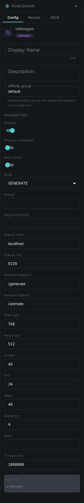
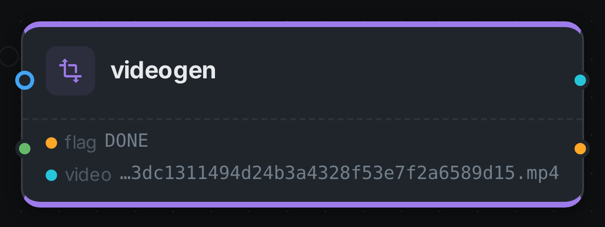

The video-generation node generates a short video clip with a diffusion model. Like the
image-generation node — and unlike the analysis nodes, which describe a property of the media itself
— videogen produces fresh media: a small MP4 clip, either from a text prompt (GENERATE) or by
animating the asset’s own still image as the opening frame (ANIMATE), and attaches it to the asset.
The clip carries a synchronised audio track.
The diffusion model runs behind a small HTTP sidecar, so the node stays a pure client and needs no model runtime of its own. The shipped sidecar serves LTX-2, which fits a single 24 GB GPU.
Kind |
|
Applies to |
Image assets |
Input ports |
A generation |
Output ports |
|
Requirements |
A running video sidecar ( |
Persists to |
|
Configuration

Set these in the panel above, or in the node’s options block in a pipeline definition:
| Option | Meaning |
|---|---|
|
|
|
The generation prompt (required) |
|
What to steer away from (optional; the sidecar applies its own default when empty) |
|
Address of the video sidecar (default |
|
Output size (default |
|
Number of frames (default |
|
Frame rate of the produced clip (default |
|
Number of inference steps (default |
|
Prompt guidance scale (default |
|
Optional RNG seed for reproducible output |
Seeing it run
Turn on Debug Mode and every node keeps what it produced, on the
card itself. Below is a real run in ANIMATE mode over pexels-photo-2379005.jpeg, prompted for
"the man turns his head slowly towards the camera and smiles" — 49 frames at 768×512, the shipped
defaults, at 20 steps.

Two ports: video carries the path of the MP4 in the worker’s local cache and flag records how the
node finished. Unlike Imagegen, the card shows the path rather than the result —
the debugging view previews images, and a video artifact has no still to show.
|
Note
|
The clip has sound. LTX-2 returns synchronised audio from the same forward pass and the
sidecar muxes both into the MP4, so what lands on the video port is a 49-frame H.264 stream with an
AAC track beside it — not a silent animation.
|
ANIMATE is the mode worth photographing: GENERATE, the shipped default, never reads the incoming
media and answers from the prompt alone.
Running the sidecar
The sidecar is a small FastAPI service:
cd sidecars/ltx2-sidecar
./setup.sh # venv; installs torch (cu128) then requirements.txt
./run.sh # serves on :9220 (first call loads the model)
# smoke test
curl -s -X POST localhost:9220/generate \
-H 'content-type: application/json' \
-d '{"prompt":"a dark, elegant cinemagraph of glowing teal threads","num_frames":33}' -o out.mp4The first request downloads and quantizes the model, which takes a while; everything after is warm.
LTX-2 is a large system — it fits a single 24 GB card only because the sidecar quantizes it to
4-bit. Set steps and numFrames modestly for interactive latency and raise them once you have the
GPU time budget.
Use Cases
-
Motion hero clips — turn a catalogue prompt into a short looping clip for a listing.
-
Animating a still — bring an existing asset’s image to life as the opening frame of a clip.
-
Previews & variations — produce derived motion visuals for review workflows.
The generated MP4 is written to the worker’s local videogen_bin cache and a node-result ledger row
records that the node ran for the asset. Wire the video port into an S3 Sink to
keep the clip and register it as its own asset.